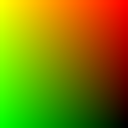
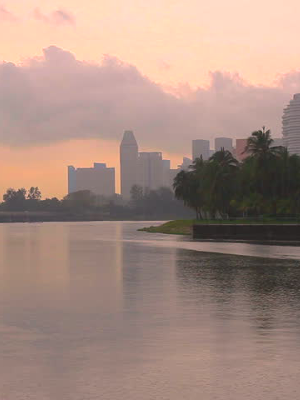

droplet
particle simulation
switch animatiion
switch debug images
leaf
central park
canvas-watermap
drop-alpha drop-color  drop-shine
texture-fg  texture-bg alpha-gfx
drop-buffer
texture-fg-blur
texture-bg-blur